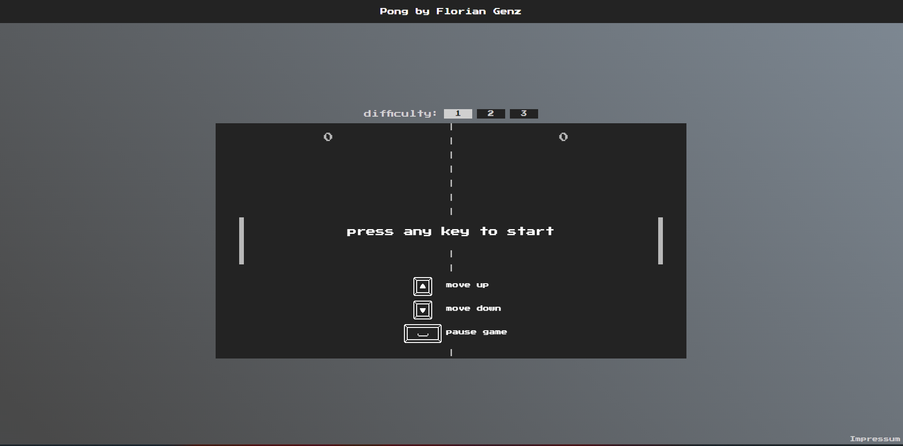

<div class="projectPreviewWrapper">
    
  <div class="projectPreviewText" (mouseenter)="portfolio.mouseEnterText()" (mouseleave)="portfolio.mouseLeaveText()">
    Das traditionelle Pong-Spiel mit eigenen Features.
    <br>
    Der Spieler spielt gegen einen Bot, dessen Schwierigkeit über die Knöpfe über dem Canvas eingestellt werden kann (3 Stufen).
  </div>
  <div class="projectPreviewButtons">
    <div class="projectPreviewButton">
      <a href="https://github.com/FlorianGenz/pong" target="_blank">Github</a>
    </div>
    <div class="projectPreviewButton">
      <a href="https://pongfg.netlify.app" target="_blank">Seite besuchen</a>
    </div>
  </div>
</div>
